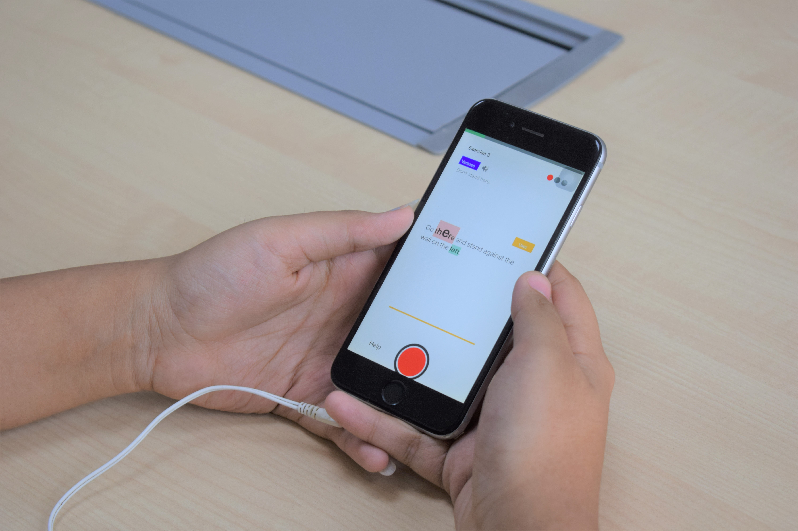
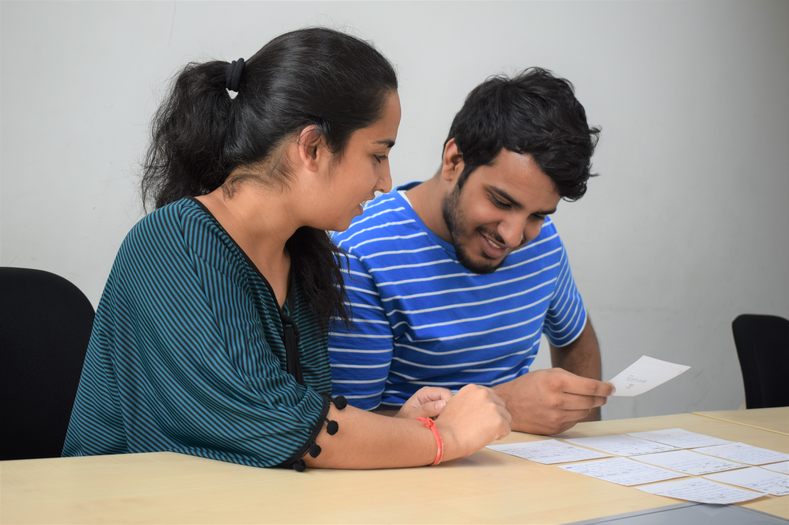

Iterative Design for a Voice-Input App
Learn to stress in speech
Stakeholders - People with English as second language(ESL)

Educational app
English speaking in populations where the native language is not English is a problem. People in these areas tend to speak English in the same style as their native language. For example, Hindi is a syllable timed language and Hindi speaking people who have English as their second language (ESL), tend to speak English in a syllable timed manner. English, however is supposed to be spoken in a stress timed manner. The Verbose app aims to teach people with English as second language (ESL) to become better speakers with improved speech expressions. A user study on the app revealed the importance of such a tool in the lives of people with ESL. People who used the app expressed their felt views on the novelty of the app, effectiveness of the skills taught and usability of the app.
The app was developed in the following four stages.
- A cue-card study validated the teaching pedagogy.
- A low-fidelity study was used for coming with the basic app structure, embedding necessary interactions that aide the learning process and finally, governing the app flow.
- An audio-visual user study revealed the most intuitive way to represent stress in written English. This was also one of our key contributions in the study.
- A mobile-based app testing confirmed the hypothesis regarding the teaching methodology, practical applications of the skills taught, usability of the app and novel insights revealed from the subjects.
Cue card study

The cue card study was done with 10 participants, all selected from the university campus through emails. The app was designed to engage the user in a conversation with a chat agent called Verbose (simulated by the designer in the cue card study). The participant and the designer had to role play the conversations alternatively. Each participant was supposed to speak the same sentence three times, but each time with different contexts. Each participant went through the entire procedure after consenting to the study. The change in performance was calculated before and after the cue card training to validate the teaching pedagogy. Along with this, the recordings of individual participants were recorded and later checked on the Praat software for observations that could be transferred to the final smartphone app. Two observations were carried forward for the final design. First was selection of content material so that places of intonation within the text do not coincide with places where the base tones of syllable are high. Second was the distinction of change in intensity from pitch.
Types of intonation taught
A thorough literature survey revealed 4 intonations which are universally accepted across all types of English accents like Australian, British, American etc. and that have different contextual meanings. Each intonation had a different type of shape in terms of its pronunciation and different place in the sentence where it is pronounced. These intonations were modelled for practice in the final samrtphone app to teach why, when and how to pronounce intonations.
Low-fidelity prototype
 (1).jpg)
 A think-aloud approach informed the basic app structure, with useful interactions in the learning process, relevant information to be displayed and the complete app flow. 10 participants were selected from the university by sending out emails about the testing of a voice-based learning app. Open coding the think aloud sessions of the participants on sketch-based mockups of the app usage gave us five categorical emergent themes. First was clear demarcation of the different app phases. This prompted us to include section wise distinctions of the various app phases, namely, instructions, pre training, training, post training and analysis phases, which were clearly mentioned through a splash screen in the app. Second was graphical representation of the analysis phase for a less cluttered and less cognitively-loaded mode of display, which initially was only textual. This was incorporated in the final app development through two types of graphs showing the progress made in terms of the individual intonations learned and the total change in performance score as compared from the pre-training phase. Third was section wise feedbacks on the training screens within the training phase for reinforcing the learning process that improves intonations. This was included in the final smartphone app development through constant pop-up feedback interactions and feedback screens after each training screen. Fourth was cues on the interaction details in the training screens, with ways to display the minimum number of tries, bonus attempts and hints. The minimum number of tries and bonus attempts were incorporated in the final app through circular icons on the top right of each training screen with three different colors, red denoting the wrong attempt, green denoting the correct attempt and grey denoting the remaining attempts. Hints were denoted through a separate button on the bottom left of the screen denoting incremental hints with each try to successfully complete the training level trial. The final theme that emerged out of the user study was introducing each new intonation before the actual training session. This was incorporated through a splash screen at the beginning of each new introduced intonation. The low-fidelity study gave us five important feedbacks and helped us transfer the relevant design details to the final mobile-based app.
A think-aloud approach informed the basic app structure, with useful interactions in the learning process, relevant information to be displayed and the complete app flow. 10 participants were selected from the university by sending out emails about the testing of a voice-based learning app. Open coding the think aloud sessions of the participants on sketch-based mockups of the app usage gave us five categorical emergent themes. First was clear demarcation of the different app phases. This prompted us to include section wise distinctions of the various app phases, namely, instructions, pre training, training, post training and analysis phases, which were clearly mentioned through a splash screen in the app. Second was graphical representation of the analysis phase for a less cluttered and less cognitively-loaded mode of display, which initially was only textual. This was incorporated in the final app development through two types of graphs showing the progress made in terms of the individual intonations learned and the total change in performance score as compared from the pre-training phase. Third was section wise feedbacks on the training screens within the training phase for reinforcing the learning process that improves intonations. This was included in the final smartphone app development through constant pop-up feedback interactions and feedback screens after each training screen. Fourth was cues on the interaction details in the training screens, with ways to display the minimum number of tries, bonus attempts and hints. The minimum number of tries and bonus attempts were incorporated in the final app through circular icons on the top right of each training screen with three different colors, red denoting the wrong attempt, green denoting the correct attempt and grey denoting the remaining attempts. Hints were denoted through a separate button on the bottom left of the screen denoting incremental hints with each try to successfully complete the training level trial. The final theme that emerged out of the user study was introducing each new intonation before the actual training session. This was incorporated through a splash screen at the beginning of each new introduced intonation. The low-fidelity study gave us five important feedbacks and helped us transfer the relevant design details to the final mobile-based app.
Visual representation study
A visual design expert along with 10 students from the visual design class were used to intuitively rate the closeness of the text written on the screen with the audio playback provided on an online link containing the relevant files and the response measurement form. All possible combinations of the options available to highlight text in a text editor like bold, underline, italics, highlight with the options available to show change in pitch modulation like change in text size and graphical representation above the text were presented to the users. 2 combinations among them were rated the most intuitive by the participants. Subjective feedbacks on the form helped us narrow the most intuitive representation as the one where the text color of the tonic units was the same as that of the tonic syllable, alongwith change in text size representing pitch modulation. Further, observations regarding the unintuitiveness of text italics and graph to highlight stress and change in stress, respectively were noted. This audio-visual user study was formalized after a thorough literature survey examining the various ways in which change in pitch has been represented historically while writing musical notes and tone sounds, finding an optimum way to read that does not disrupt the flow of reading and at the same time provides relevant sound related information clearly.
App Architecture
The figure below describes the system upon which the final high-fidelity app was built. Voice input from the user was recorded for analysis and sent to the server for content analysis. If a normal threshold accuracy for correctness was achieved, the audio was split into timeframes to get the exact part where the user intonated in a sentence. This was then pitch extracted using Parselmouth and analysed through a self constructed algorithm for checking intonation.
High-fidelity app structure


High-fidelity testing
A comprehensive evaluation on the final high-fidelity app across three sessions and in between the 4 phases of the app, namele, pre-training test, training, post-training test and analysis phases, was done using methods as shown below.
UEQ (User Experience Questionnaire)
A UEQ questionnaire was conducted to find out the user reponses on features of the app involving attractiveness, perspicuity, efficiency, dependability, stimulation and novelty.
SUS (System Usability Scale)
The SUS scores were used to find the app usability. Any score above 80.3 (out of 100) on the SUS scale is among the top 10 percentile and correlates to the adjective rating of good. The overall user-friendliness of our app was rated 82.3 (out of 100) on SUS. The score was much above the required average benchmark score on SUS, which is 68. These results proved the hypothesis of our app in teaching the requisite English speaking skills. Quantitative analysis of learning gain across different intonation and across sessions revealed each result was statistically significant. Further, the percentage incorrect performance of the users was used to find the level of difficulty of each intonation. To further validate our findings and ground them in reason, these numbers were assisted from our qualitative findings of semi structured interviews conducted after session3 of the study.Quote
This was something new and very useful. I will certainly use at least sentence and question intonations in my regular speech as they will definitely improve the way I express my intentions.
I worked on this project with Manshul V. Belani (pursuing Ph. D. under Dr. Aman Parnami) and Naman Maheshwari (intern at Weave Lab). Manshul was responsible for providing assistive literature review on the work alongside providing technical expertise on the user study methods. Naman was responsible for getting his hands dirty and building the app based on the inputs of team discussions. Dr. Aman Parnami was the advisor for the work.
My responsibilities
- I was the team lead for the project.
- I realized the need for an educational tool in the lives of people who have English as second language.
- I read the related work and found a gap in existing literature that we can leverage to make an educational tool that is novel and effective, i.e. a tool that teaches why, how and when to speak something.
- I designed all the user studies after consultation with fellow team members and Dr. Parnami, the project advisor.
- I was responsible for coding the backend logic of the algorithm in python on which the system runs.
https://github.com/namanmaheshwari97/Verbose-backend
** Participated at IMWUT 2020(Nov 15, 2019). Paper under review at next IMWUT 2020 cycle (Feb 15, 2020) with revised changes.